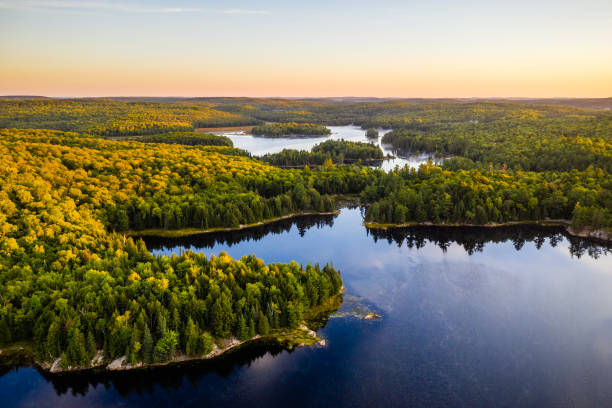

A folyók bolygónk érhálózatai: civilizációkat bölcsőztek, átformálják a tájat, és a Föld legfontosabb édesvízforrásait biztosítják. Amikor a világ leghosszabb folyóiról beszélünk, nem csupán hatalmas víztömegekről, hanem kontinenseken átívelő, egyedülálló ökoszisztémákról és gazdasági ütőerekről van szó.

| Neve | Kezdőpont | Végpont |
| Nílus | Kagera | Földközi tenger |
| Amazonas | Mantaro | Atlanti-óceán |
| Jangce | Csinghaj | Kelet-kínai-tenger |